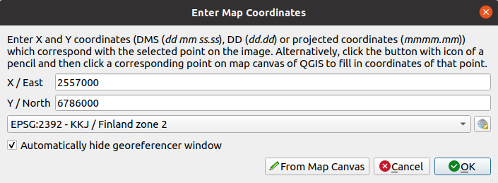

14.2. သင်ခန်းစာ - မြေပုံတစ်ခုကို Georeference ပြုလုပ်ခြင်း (Lesson: Georeferencing a Map)
များသောအားဖြင့်လုပ်ဆောင်လေ့ရှိသော သစ်တောလုပ်ငန်းတစ်ခုသည် သစ်တောဧရိယာတစ်ခုအတွက် update ဖြစ်သော အချက်အလက်များရယူရန်ဖြစ်သည်။ အဆိုပါဧရိယာအတွက် ယခင်အချက်အလက်များသည် လွန်ခဲ့သောနှစ်များစွာအကြာက စာရွက်ပေါ်တွင်စုဆောင်းခဲ့သည့်အချက်အလက်များဖြစ်နိုင်ပါသည်၊ သို့မဟုတ် အချက်အလက်များကို digitize ပြုလုပ်ခဲ့သော်လည်း သင့်တွင် အဆိုပါ inventory data ၏ စာရွက် ဗားရှင်းသာ ကျန်ရှိနေခြင်းမျိုးလည်း ဖြစ်နိုင်ပါသည်။
ထိုအချက်အလက်များကို GIS ထဲတွင် အသုံးပြုလိုပြီး inventory များကို နှိုင်းယှဉ်လိုသည်ဆိုပါက GIS software ထဲတွင် အချက်အလက်များကို လက်ဖြင့် digitize ပြုလုပ်ရန်လိုအပ်ပါလိမ့်မည်။ သို့သော် digitize မစတင်မီတွင် ပထမဦးဆုံးလုပ်ဆောင်ရမည့် အရေးကြီးသောအဆင့်သည် မြေပုံကို scan ပြုလုပ်ခြင်းနှင့် georeference ပြုလုပ်ခြင်းဖြစ်သည်။
ဤသင်ခန်းစာအတွက် ရည်မှန်းချက်- QGIS ထဲရှိ Georeferencer tool ကို အသုံးပြုတတ်စေရန်။
14.2.1. ★☆☆ မြေပုံကို scan ဖတ်ခြင်း (Scan the map)
ပထမဦးဆုံးလုပ်ဆောင်ရမည်မှာ မြေပုံကို scan ဖတ်ရန်ဖြစ်သည်။ မြေပုံသည် အလွန်ကြီးနေလျှင် အပိုင်းလိုက် scan ဖတ်ပြီး တစ်ပိုင်းချင်းစီကို georeference ပြုလုပ်ခြင်းကို ထပ်ခါထပ်ခါပြုလုပ်ရပါလိမ့်မည်။ ထို့ကြောင့် မြေပုံကို အပိုင်းနည်းနိုင်သမျှနည်းအောင် scan ဖတ်ပါ။
သင့်အနေဖြင့် ဤ manual ထဲတွင်ပေးထားသော မြေပုံမဟုတ်ပဲ အခြားမြေပုံတစ်ခုကို အသုံးပြုမည်ဆိုလျှင် ကိုယ်ပိုင် scanner ကိုအသုံးပြုပြီး မြေပုံကို image ဖိုင်အဖြစ် scan ဖတ်ပြီး 300 DPI resolution ထားပါ။ မြေပုံသည် အရောင်ပါရှိသောမြေပုံဖြစ်လျှင် အရောင်ဖြင့် scan ဖတ်ပါ၊ သို့မှသာ နောက်ပိုင်းတွင် အဆိုပါ အရောင်များကိုအသုံးပြုပြီး မြေပုံကို layer အမျိုးမျိုး (ဥပမာ- သစ်တောပင်ထောင်များ၊ ကွန်တိုမျဉ်းများ၊ လမ်းများ၊….) အဖြစ် အချက်အလက်များခွဲထုတ်နိုင်မည်ဖြစ်သည်။
ယခုလေ့ကျင့်ခန်းအတွက် ယခင်က scan ဖတ်ထားပြီးသောမြေပုံကို အသုံးပြုပါမည်။ ထိုမြေပုံကို exercise_data/forestry folder ထဲတွင် rautjarvi_map.tif အနေဖြင့် တွေ့နိုင်ပါသည်။
14.2.2. ★☆☆ လိုက်လုပ်ကြည့်ပါ - Scan ဖတ်ထားသောမြေပုံကို Georeference ပြုလုပ်ခြင်း (Follow Along: Georeferencing the scanned map)
QGIS ကိုဖွင့်ပြီး ထဲတွင် project ၏ CRS ကို
EPSG:3067 - ETRS89 / TM35FIN(E,N)ဟုသတ်မှတ်ပါ။ ၎င်း CRS သည် Finland တွင် လက်ရှိအသုံးပြုနေသော CRS ဖြစ်သည်။
QGIS project ကို
map_digitizing.qgsအဖြစ် သိမ်းဆည်းပါ။
Georeferencer ဟုခေါ်သော QGIS မှ georeferencing tool ကိုအသုံးပြုပါမည်။ မြေပုံကို georeference ပြုလုပ်ရန်-
 tool ကိုဖွင့်ပါ။
tool ကိုဖွင့်ပါ။
Georeference ပြုလုပ်မည့် image အဖြစ်
rautjarvi_map.tifimage ဖိုင်ကို မှတဆင့် ထည့်သွင်းပါ။OK ကိုနှိပ်ပါ။
နောက်တစ်ဆင့်အနေဖြင့် မြေပုံကို georeference ပြုလုပ်ရန်အတွက် transformation setting များကို သတ်မှတ်ပေးသင့်ပါသည်-
ကိုဖွင့်ပါ။
Transformation type တွင်
Linearဟုသတ်မှတ်ပြီး Resampling method တွင်Nearest neighbourဟုသတ်မှတ်ပါ။Target SRS ဘေးရှိ
 Select CRS ခလုတ်ကိုနှိပ်ပြီး
Select CRS ခလုတ်ကိုနှိပ်ပြီး EPSG:2392 - KKJ / Finland zone 2CRS ကိုရွေးချယ်ပါ၊ ၎င်းသည် ဤမြေပုံကို ဖန်တီးခဲ့စဉ် 1994 ခုနှစ်တွင် Finland ၌အသုံးပြုခဲ့သော CRS ဖြစ်သည်။Output raster box ဘေးရှိ icon ကိုနှိပ်ပါ၊
exercise_data\forestry\digitizingfolder ကိုဖန်တီးပြီး ဖိုင်အမည်ကိုrautjarvi_georef.tifဟုအမည်ပေးပါ။ Load in QGIS when done ကိုအမှန်ခြစ်ပါ။
Load in QGIS when done ကိုအမှန်ခြစ်ပါ။ကျန်ရှိသော parameter များကို default အတိုင်း ချန်ထားခဲ့ပါ။

OK ကိုနှိပ်ပါ။
မြေပုံထဲရှိ ကိုဩဒိနိတ်များကို အမှတ်အသားလုပ်ထားသော ကြက်ခြေခတ်များစွာ ပါဝင်နေပါသည်၊ အဆိုပါ ကြက်ခြေခတ်များကို georeference ပြုလုပ်ရာတွင် အသုံးပြုပါမည်။ Georeferencer window ထဲတွင် image ကို zoom အချုံ့/အချဲ့လုပ်ခြင်းနှင့် မြင်ကွင်းနေရာရွှေ့ခြင်းများ လုပ်ဆောင်နိုင်ပါသည်။
မြေပုံ၏ ဘယ်ဘက်အောက်ခြေထောင့်သို့ zoom ချဲ့ကြည့်ပါက
KKJ / Finland zone 2CRS တွင်ရှိသော X နှင့် Y ကိုဩဒိနိတ်အတွဲတစ်ခုဖြင့် ကြက်ခြေခတ်တစ်ခုရှိပါမည်။ ထို point ကို georeference ပြုလုပ်ခြင်းအတွက် ပထမဦးဆုံး မြေပြင်ထိန်းချုပ်အမှတ် (ground control point) အဖြစ်အသုံးပြုပါမည်။Add point tool ကိုရွေးချယ်ပြီး ကြက်ခြေခတ်အလယ်ဆုံမှတ်တွင် click နှိပ်ပါ (pan နှင့် zoom ကို လိုအပ်သလိုအသုံးပြုပါ)။
Enter map coordinates dialogue ထဲတွင် မြေပုံပေါ်၌တွေ့ရသော ကိုဩဒိနိတ်များ (X: 2557000 and Y: 6786000) ကိုရိုက်ထည့်ပြီး CRS ကို
EPSG:2392 - KKJ / Finland zone 2ထားပါ။ OK ကိုနှိပ်ပါ။
Georeferencing အတွက် ပထမ ကိုဩဒိနိတ် အဆင်သင့်ဖြစ်နေပြီ ဖြစ်သည်။
Image ထဲတွင် အခြား ကြက်ခြေခတ်များကို ရှာဖွေပါ၊ ၎င်းတို့သည် မြောက်ဘက်နှင့်အရှေ့ဘက်လားရာသို့ တစ်ခုနှင့်တစ်ခု 1000 မီတာ အကွာအဝေးဖြင့် ပိုင်းခြားထားပါသည်။ အဆိုပါ point များ၏ ကိုဩဒိနိတ်များကို ပထမ point နှင့်ဆက်စပ်ပြီး တွက်ချက်ပေးနိုင်ပါသည်။
Image ကို zoom ချုံ့ပြီး အခြား ကြက်ခတ်တစ်ခုကို မတွေ့ခင်အထိ ညာဘက် သို့မဟုတ် အပေါ်ဘက်သို့ ရွှေ့ပြီး ကီလိုမီတာမည်မျှ ရွှေ့ပြီးသည်ကို ခန့်မှန်းပါ။ Ground control point များကို တစ်ခုနှင့်တစ်ခု ဝေးနိုင်သမျှဝေးအောင် နေရာချပါ။
ပထမ point အတွက်လုပ်ခဲ့သည့်နည်းအတိုင်း နောက်ထပ် ground control point အနည်းဆုံး ၃ ခုကို digitize ပြုလုပ်ပါ။ ပြီးဆုံးပါက အောက်ပါပုံစံအတိုင်း ဖြစ်နေပါလိမ့်မည်-

Digitize ပြုလုပ်ထားပြီးသော ground control point ၃ ခုနှင့်အတူ georeferencing error ကို point များမှ ထွက်လာသော အနီရောင်မျဉ်းတစ်ခုအဖြစ် မြင်တွေ့ရပါလိမ့်မည်။ Pixel ဖြင့်ဖော်ပြသော error ကို GCP table ထဲရှိ dX[pixels] နှင့် dY[pixels] column များထဲတွင်လည်း တွေ့ရနိုင်ပါသည်။ Pixel ဖြင့်ဖော်ပြသော error သည် 10 pixel ထက် မများသင့်ပါ။ အကယ်၍ 10 pixel ထက်များနေပါက digitize လုပ်ထားသော point များနှင့် ထည့်သွင်းထားသော ကိုဩဒိနိတ်များကိုပြန်စစ်ဆေးသင့်ပါသည်။ အထက်ပါ image ကို အကိုးအကားအနေဖြင့် အသုံးပြုနိုင်ပါသည်။
Control point များကို ကျေနပ်မှုရှိပါက ၎င်း point များကို နောက်ပိုင်းတွင်အသုံးပြုနိုင်ရန်အတွက် သိမ်းဆည်းထားနိုင်ပါသည်-
သို့သွားပါ။
exercise_data\forestry\digitizingfolder ထဲတွင် ဖိုင်ကိုrautjarvi_map.tif.pointsဟုအမည်ပေးပါ။
နောက်ဆုံးတွင် မြေပုံကို georeference ပြုလုပ်ပါ-
သို့သွားပါ။
ဖိုင်ကို
rautjarvi_georef.tifဟု အမည်ပေးထားပြီးသားဖြစ်နေပါမည်။ယခုအခါ မြေပုံကို QGIS project ထဲတွင် georeference ပြုလုပ်ပြီးသား raster အနေဖြင့် မြင်တွေ့နိုင်ပြီ ဖြစ်ပါသည်။ Raster သည် အနည်းငယ် လှည့်ထားသည့်ပုံစံဖြစ်နေသည်ကို သတိထားမိပါလိမ့်မည်၊ ထိုသို့ဖြစ်ရသည်မှာ data သည်
KKJ / Finland zone 2CRS တွင်ရှိပြီး project သည်ETRS89 / TM35FIN(E,N)CRS တွင် ရှိနေသောကြောင့်ဖြစ်သည်။Data ကို မှန်ကန်စွာ georeference ပြုလုပ်ထား/မထားကို စစ်ဆေးရန်-
exercise_data\forestryfolder ထဲရှိrautjarvi_aerial.tifအမည်ဖြင့် ကောင်းကင်ဓာတ်ပုံကိုဖွင့်ပါ။သင့်မြေပုံနှင့် ထိုကောင်းကင်ဓာတ်ပုံသည် ကောင်းမွန်စွာ ကိုက်ညီနေသင့်ပါသည်- မြေပုံ၏ အလင်းဖောက်နှုန်းကို 50% သတ်မှတ်ပေးပြီး ကောင်းကင်ဓာတ်ပုံနှင့်နှိုင်းယှဉ်ကြည့်ပါ။

QGIS project တွင်ပြုလုပ်ထားသောပြောင်းလဲမှုများကို သိမ်းဆည်းပါ၊ နောက်လာမည့် သင်ခန်းစာအတွက် ယခုသိမ်းဆည်းထားသော နေရာမှ ဆက်လက်လုပ်ဆောင်ပါမည်။
14.2.3. နိဂုံးချုပ် (In Conclusion)
ယခုဆိုလျှင် စာရွက်မြေပုံတစ်ခုကို georeference ပြုလုပ်ပြီးဖြစ်ကာ ၎င်းကို QGIS ထဲတွင် မြေပုံ layer တစ်ခုအဖြစ် အသုံးပြုနိုင်ပြီဖြစ်ပါသည်။
14.2.4. နောက်ထပ်ဘာအကြောင်းအရာလဲ (What’s Next?)
နောက်လာမည့်သင်ခန်းစာတွင် မြေပုံထဲရှိ forest stand (သစ်တောပင်ထောင်) များကို polygon များအနေဖြင့် digitize ပြုလုပ်မည်ဖြစ်ပြီး ၎င်းတို့ထဲတွင် inventory data များထည့်သွင်းမည်ဖြစ်ပါသည်။